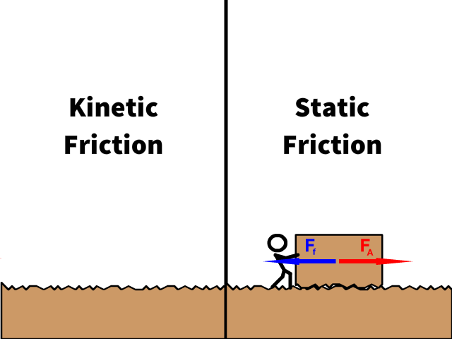
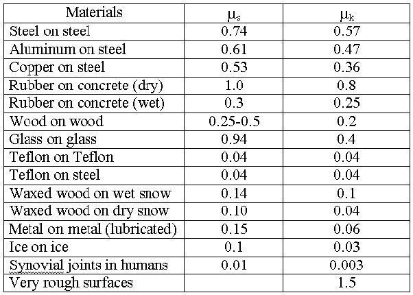
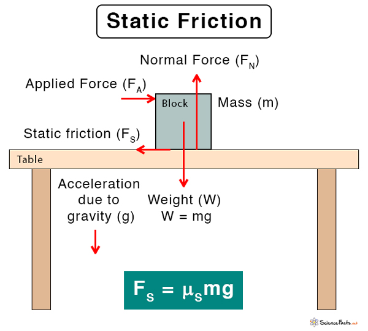

Friction:
Friction can significantly impact the speed of a CO2 Dragster in a race. Friction is the force that opposes the relative motion or tendency of such motion of two surfaces in contact. In the context of a CO2 Dragster, friction primarily affects the Dragster's speed in two main ways:

1) Rolling friction with track
2) Air Resistance / aerodynamic friction (We will discuss about this in the air resistance and aerodynamics section)
Friction resists wheel from sliding at a constant motion
The first scenario where the wheels of our Dragster make contact with the ground to create friction, will be the primary scenario we will be discussing in this section. There are two types of friction, static friction and kinetic friction:

Static friction:
Static friction occurs when two surfaces are at rest relative to each other and there's a force trying to set them in motion. The formula for static friction is:
F
(static)
≤(μs
)(N) where each variable satisfies the following:
F
(static)
: static frictional force.
Static friction is like a helpful friend that keeps things from sliding when you're trying to keep them still (Friction that counters inertia). When you try to move an object but it stays put, that resistance you feel is static friction at work.
Imagine trying to slide a heavy box on the floor (previous diagram). Initially, it's hard to get the box moving because of static friction. This type of friction occurs when two surfaces are touching each other but not moving relative to each other yet. Static friction acts in the opposite direction of the force you apply, preventing the object from budging (e.g if your force is denoted as F
A
, force Ff
/static friction will prevent the object from remaining in motion).In simpler terms, static friction is the 'stickiness' between two surfaces that stops them from sliding against each other when they're at rest. It's like a natural brake that only lets go once you push hard enough to overcome it and get things moving.
μ
s
: the coefficient of static friction, a dimensionless value specific to the materials in contact.
The coefficient of static friction is a measure of how much force is needed to start moving an object against a surface. In simpler terms, it tells us how "sticky" or "slippery" two surfaces are when they're not moving relative to each other.
Imagine trying to push a heavy box on the floor - initially, it's hard to get it to start moving because of static friction. The coefficient of static friction quantifies just how tough it is to overcome that initial resistance and get the box moving.
The higher the coefficient of static friction between two materials, the more force is required to initiate movement. For example, if the coefficient of static friction between rubber and the floor is high, it'll be hard to slide a rubber mat across the floor. Here is an example of what the friction coefficients might look like when plotted on a table:

So, in simple terms, the coefficient of static friction measures the 'stickiness' between two surfaces when they're not moving relative to each other.
N: the normal force between the surfaces.
In the static friction formula, N represents the normal force. The normal force is the force exerted perpendicular (at a right angle) to the surface of contact between two objects. It's the force that the surface applies to support the weight of an object resting on it. Here is a clearer representation of variable N:

To provide a clearer explanation:
Weight and Normal Force:
When an object is resting on a surface (e.g., a table or the ground), the force of gravity is acting downwards, which is the weight of the object (mg, where m is the mass of the object and g is the acceleration due to gravity). -> (See diagram above).
The surface, in response, exerts an equal and opposite force in the upward direction, which is the normal force (N).
Direction of Normal Force:
The normal force is always perpendicular to the surface the object is resting on. If the object is on a flat surface, the normal force is directed straight upwards (opposite to the gravitational force).
In the Formula:
In the static friction formula (F
static
≤μs
N), N is used to calculate the maximum static friction (Fstatic
) that can occur between two surfaces.
The maximum static friction (F
static
) is directly proportional to the normal force (N) exerted on the object by the surface. In other words, depending on that force N (the force acting perpendicular to the surface), the static friction or also known as "stickiness" of the two surfaces (object and the table let's say) will change in a constant way (direct variation). Therefore, to reduce static friction (the "stickiness" of the two surfaces), we must reduce the force N.
So, in simple terms, N in the static friction formula is the 'push-back' force provided by the surface to keep the object in place, and the static friction is limited to a maximum value (μ
s
N) that depends on this normal force.
Kinetic Friction:
Kinetic friction occurs when two surfaces are in motion relative to each other. The formula for kinetic friction is:
F
(kinetic)
=μk(N) where:
Assuming the track is wood (we do make the CO2 Dragster out of wood after all), these are the following mixtures that has the least frictional coefficient with wood:
Material Combination
Friction Coefficient
Soft Rubber + Wood
0.95
Hard Rubber + Wood
0.7
Soft Plastic + Wood
0.7
Hard Plastic + Wood
0.4
Here, it seems that the most frictionless mixture is hard plastic. But to reduce the frictional coefficient even more, we must make sure the wheel actually spins. To find more about the CO2 Dragster wheel and axle installation, watch this demo: